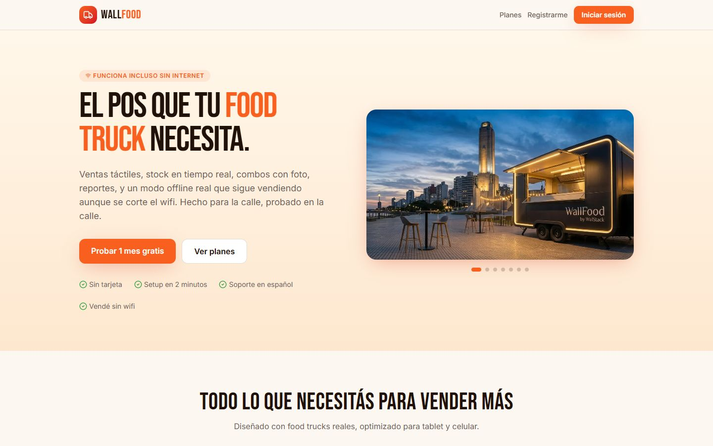
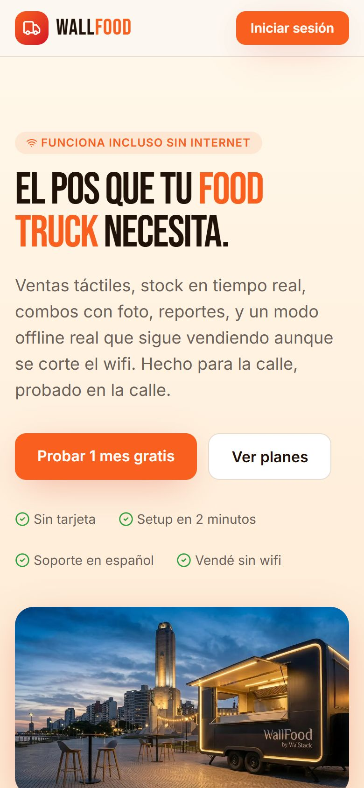

Analista de Sistemas
Walter Benítez Del problema real al producto en producción.
Analista de Sistemas egresado de la UNNOBA. Desarrollo y mantengo WallFood, un punto de venta SaaS para food trucks, y construyo NewCarPanel junto a otro desarrollador.
01 Proyecto principal · Producto propio
WallFood
Punto de venta y sistema de gestión para food trucks.
Diseño, desarrollo y mantengo WallFood, un SaaS multi-cliente para emprendimientos gastronómicos móviles, hoy en producción con un cliente real. Permite vender desde una interfaz táctil, administrar productos, combos y stock, y seguir operando cuando se corta internet: las ventas quedan guardadas en el dispositivo y se sincronizan al volver la conexión.


El problema
En un food truck la señal va y viene: eventos con miles de celulares conectados, esquinas sin cobertura, wifi que se cae en plena hora pico. Un sistema de ventas que depende de internet deja de funcionar justo cuando más se vende.
La solución
Un punto de venta pensado para la calle: rápido en pantallas táctiles, con el catálogo disponible en el dispositivo y un modo offline que permite seguir cobrando sin conexión y sincronizar todo después, sin intervención del cajero.
Qué permite hacer
-
Vender en pocos toques
Interfaz de punto de venta optimizada para tablets y celulares, con botones grandes y un flujo corto.
-
Productos, combos y stock
Catálogo con combos e imágenes; cada venta descuenta inventario y avisa cuando el stock está bajo.
-
Reportes y suscripciones
Reportes de ventas diarios, semanales y mensuales, y gestión de suscripciones de cada food truck.
-
Permisos por rol
Cajero, administrador y super administrador, cada uno con acceso solo a lo que necesita.
-
Ventas sin conexión
Las operaciones se guardan en el dispositivo y se sincronizan automáticamente al recuperar internet.
Offline-first
Se corta la señal.
La venta sigue.
-
Sin conexión
La pantalla de venta sigue funcionando igual. El catálogo, los precios y los combos están disponibles en el dispositivo.
-
Cola local
Cada venta tomada sin internet queda en una cola en el dispositivo (IndexedDB). No se pierde ningún pedido.
-
Sincronización automática
Cuando vuelve la conectividad, las operaciones pendientes se envían al servidor sin que el cajero tenga que hacer nada.
Decisiones técnicas
-
Infraestructura propia
Migré la aplicación desde Lovable a un servidor Linux propio: imagen Docker multi-etapa con servidor Node, Easypanel y Traefik con SSL, y entornos de prueba y producción separados.
-
Seguridad en la base de datos
PostgreSQL en Supabase con Row Level Security por rol y por food truck, para que cada cliente acceda solo a sus datos.
-
Proceso de entrega
Relevo necesidades con el cliente, priorizo sobre el flujo de caja real, documento cada cambio y verifico con checklists de pruebas antes de pasar a producción.
Stack de WallFood
Tecnologías utilizadas específicamente en este producto.
- Aplicación
- React 19TypeScriptTanStack StartTailwind CSSRadix UIReact QueryZod
- Datos y seguridad
- Supabase AuthPostgreSQLRow Level SecurityMigraciones SQL
- Modo offline (PWA)
- Service WorkerIndexedDB (Dexie)
- Infraestructura
- DockerNodeLinux (Ubuntu)EasypanelTraefik
- Integraciones
- CloudinaryResendAgente de impresión en Python
El producto está en línea.
Podés recorrerlo ahora.
02 Segundo proyecto
NewCarPanel
En desarrolloSaaS para servicios automotores.
Un sistema para centralizar la gestión de vehículos, los servicios realizados y el historial de cada unidad. Lo estoy desarrollando en colaboración con otro desarrollador, trabajando en equipo con Git.
03 Sobre mí
Primero entender el problema.
Después, el código.
Soy Walter Benítez, Analista de Sistemas egresado de la UNNOBA en febrero de 2026. Me interesa el software que se usa de verdad: relevo cómo trabaja la gente, detecto dónde está la fricción y construyo herramientas que la resuelven.
-
Un producto en producción. Con WallFood llevo un SaaS de punta a punta: modelo de datos, lógica de negocio, interfaz, modo offline, servidor y despliegue.
-
Trabajo en equipo. Desarrollo NewCarPanel en colaboración con otro desarrollador, coordinando el trabajo con Git.
-
IA como herramienta, no como atajo. Uso Claude Code y ChatGPT como asistentes; reviso, pruebo y me hago responsable del código y de las decisiones técnicas.
-
Lo que busco. Sumarme a un equipo de desarrollo, análisis o implementación de sistemas. Prioridad remoto; disponibilidad para CABA, GBA y Rosario.
04 Tecnologías
Con qué trabajo
Usada en WallFood
Desarrollo
- TypeScript (usada en WallFood)
- React (usada en WallFood)
- Node.js (usada en WallFood)
- Python (usada en WallFood)
- JavaScript
- Express
- APIs REST
Datos
- PostgreSQL (usada en WallFood)
- Supabase (usada en WallFood)
- Row Level Security (usada en WallFood)
- SQL y migraciones (usada en WallFood)
Infraestructura
- Docker (usada en WallFood)
- Linux (Ubuntu) (usada en WallFood)
- Easypanel (usada en WallFood)
- Traefik (usada en WallFood)
- Git y GitHub
IA aplicada al desarrollo
- Claude Code
- ChatGPT
Idiomas
- Español nativo
- Inglés B1
05 Recorrido
Formación y proyectos
-
2026 — actualidad
WallFood
Producto propio · En producción
SaaS de punto de venta para food trucks: ventas, stock, combos, reportes, suscripciones, permisos por rol y modo offline con sincronización.
-
En desarrollo
NewCarPanel
Proyecto colaborativo
SaaS para talleres, lubricentros, concesionarias y flotas: gestión de vehículos, servicios e historial.
-
Oct. 2026
Inteligencia Artificial Generativa
XXX Escuela Internacional de Informática CACIC 2026 · UTN-FRCU
LLM, prompts, RAG, modelos open source y agentes. Constancia de cursado.
-
Feb. 2026
Analista de Sistemas
Universidad Nacional del Noroeste de la Provincia de Buenos Aires (UNNOBA)
Título obtenido. Programación, bases de datos, análisis y diseño de sistemas, redes y seguridad informática.
-
Oct. 2025
Sistemas de Ciberdefensa con IA
CACIC 2025 · Universidad Nacional de Río Negro
Curso de 15 horas, aprobado.
06 Contacto
Hablemos.
¿Buscás sumar a alguien a tu equipo o tenés un proyecto en mente? Escribime y te respondo.
walteralejandrob85@gmail.com